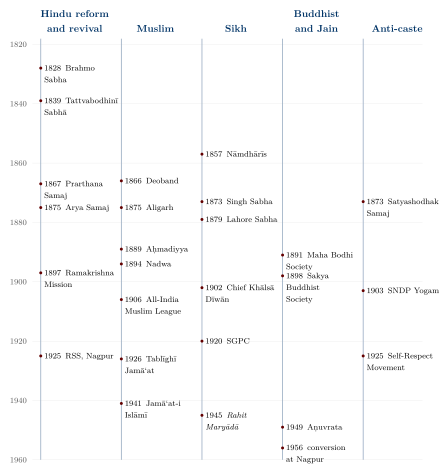

Chapter 9: Vedānta, Reform and Neo-Vedānta¶
sa ya eṣo ’ṇimaitadātmyam idaṃ sarvaṃ tat satyaṃ sa ātmā tat tvam asi śvetaketo
That which is the finest essence — this whole world has that as its self. That is the truth; that is the self. And that is how you are, Śvetaketu.
— Chāndogya Upaniṣad 6.8.7
9.1 Introduction¶
In the nineteenth and twentieth centuries one Indian philosophical tradition, Advaita Vedānta, came to be presented to the world — and to many Indians — as the essence of Hinduism and even as the meeting point of all religions. This chapter explains how that happened. It begins with Vedānta as a classical school, one among several and itself divided, and then follows the reform movements of colonial India, from Rammohun Roy to Radhakrishnan, which reinterpreted it. The two following chapters are devoted to the most influential reinterpreters, Vivekananda and Aurobindo. The classical schools are treated more fully in Volume 3 and the Upaniṣads in Volume 2.
9.2 Classical Vedānta¶
9.2.1 The three foundations and Śaṅkara¶
Vedānta (“the end of the Veda”) is the school of interpretation that takes the Upaniṣads as its primary source. Its classical authors commented on three “foundations” (prasthānatraya): the principal Upaniṣads, the Bhagavadgītā and the Brahmasūtra. The earliest surviving complete commentaries on all three are those of Śaṅkara (c. 700–750 CE; traditional dates 788–820), the founder of Advaita, “non-dual”, Vedānta.
Śaṅkara taught that Brahman, pure being and consciousness, is the only reality; that the individual self (ātman) is identical with Brahman; and that the world of many things and persons, though real for practical purposes, is not ultimately real. The appearance of multiplicity is due to a beginningless ignorance (avidyā) which “superimposes” (adhyāsa) the properties of the non-self on the self, as a rope is mistaken for a snake. Śaṅkara distinguished the standpoint of ordinary experience (vyāvahārika), at which the world, the Vedic injunctions and the personal God are real, from the standpoint of ultimate truth (pāramārthika), at which only Brahman is; later Advaitins added a third level, that of mere illusion (prātibhāsika). Liberation comes from knowledge of Brahman, which removes ignorance; it is not produced by action, since what is produced by action is impermanent. For Śaṅkara this knowledge arises from scripture: the “great sentences” (mahāvākya) of the Upaniṣads, such as “that is how you are” (tat tvam asi) of the Chāndogya, rightly understood by a qualified student under a teacher, are the means of knowing Brahman. Anantanand Rambachan has emphasised that for Śaṅkara scripture, not mystical experience, is the decisive means of knowledge (pramāṇa) (Rambachan 1991; Potter 1981).
9.2.2 How Śaṅkara argued¶
Śaṅkara’s commentary on the Brahmasūtra opens with a celebrated preface on superimposition. The subject (“I”) and the object (“you”) are opposed like light and darkness, so that the properties of one cannot belong to the other; yet in ordinary experience we constantly confuse them, saying “I am fat” or “I am blind”, attributing to the self the properties of the body and senses. This confusion, he argues, is beginningless and natural, and all the distinctions of ordinary life — between knower and known, agent and action, even between the injunctions of the Veda and those to whom they apply — presuppose it. The purpose of the Upaniṣads is to remove it by teaching the self’s identity with Brahman.
The argument is subtle. Śaṅkara does not deny that the Vedic rituals, the castes and stages of life, the gods and the world are real for all practical purposes; he insists that they are, and that they must be respected by those who live within them. He denies only that they are ultimately real. This allowed him to combine a radical metaphysics with a conservative social teaching: renunciation of ritual and caste duties was open, on his view, only to Brahmin men, and he excluded Śūdras from the study of the Upaniṣads, though not from liberation through other means. Modern admirers of Advaita have often drawn egalitarian conclusions from the identity of all selves in Brahman; Śaṅkara did not.
9.2.3 Divisions within Advaita¶
After Śaṅkara the school divided over several questions. Is ignorance located in the individual self or in Brahman? Vācaspati Miśra (10th century), in his commentary called the Bhāmatī, held that the individual self is the locus of ignorance and Brahman its object; Prakāśātman’s Vivaraṇa school, building on Śaṅkara’s pupil Padmapāda, held that Brahman is both locus and object. Another pupil, Sureśvara, and the independent thinker Maṇḍana Miśra developed other positions. The debates continued for centuries and produced some of the most rigorous dialectical works in Indian philosophy. Eliot Deutsch’s reconstruction offers an accessible philosophical account of the system (Deutsch 1969).
9.2.4 Rival Vedāntas¶
Advaita was never the only Vedānta. Rāmānuja (traditionally 1017–1137) commented on the same texts and found in them a “qualified non-dualism” (viśiṣṭādvaita): Brahman is the personal God Viṣṇu–Nārāyaṇa, and the world and selves are real, forming his body, inseparable from him as attributes from their substance. In his Śrībhāṣya he raised a series of objections to the Advaita doctrine of ignorance: where could it reside, if Brahman is pure knowledge? how could it be neither real nor unreal? John Carman’s study remains the standard account of his theology (Carman 1974). Madhva (c. 1238–1317; traditional dates 1199–1278) taught a thoroughgoing dualism (dvaita) based on five real differences — between God and selves, God and matter, self and self, self and matter, and matter and matter — and held that selves are eternally graded in their capacity for bliss (Sharma 1962). Nimbārka, Vallabha and the Gauḍīya Vaiṣṇavas following Caitanya developed further Vedāntas, most of them devotional. For most of their history the Vedāntas argued fiercely with one another, and with the Buddhists, Jains, Mīmāṃsakas and Naiyāyikas.
Table 9.1 summarises the main positions. It simplifies a large literature, but it shows how far apart the schools that all called themselves Vedānta could be.
| Advaita | Viśiṣṭādvaita | Dvaita | |
|---|---|---|---|
| Chief teacher | Śaṅkara (c. 700–750) | Rāmānuja (trad. 1017–1137) | Madhva (c. 1238–1317; trad. 1199–1278) |
| Brahman | pure being–consciousness, without attributes | the personal God Viṣṇu–Nārāyaṇa, possessing infinite good qualities | the personal God Viṣṇu, wholly independent |
| Selves | identical with Brahman; plurality due to ignorance | real, many, forming God’s body; inseparable from him | real, many, eternally distinct from God and from one another |
| World | real for practical purposes; ultimately an appearance | real, the body of God | real and distinct from God |
| Means of release | knowledge from the Upaniṣads, under a teacher | devotion and surrender, aided by grace | devotion and grace, with knowledge of God’s supremacy |
| State of release | realisation of identity; no individual remains | eternal service and enjoyment of God in his presence | eternal bliss graded by the self’s capacity |
9.2.5 Classical synthesisers¶
Some classical thinkers did attempt broad syntheses. The fourteenth-century Sarvadarśanasaṃgraha of Mādhava ranges the schools in an order that leads towards Advaita (Chapter 1). Madhusūdana Sarasvatī (16th century) combined Advaita with devotion to Kṛṣṇa; Vijñānabhikṣu (16th century) argued that Sāṃkhya, Yoga, Nyāya, Vaiśeṣika and Vedānta were in harmony when properly understood, and that their apparent disagreements arose from addressing different audiences. Madhusūdana also wrote a short work, the Prasthānabheda (“The Divisions of the Sciences”), which surveys the branches of learning — the Vedas and their auxiliary sciences, the Purāṇas, logic, exegesis, law, medicine, archery, music, statecraft and the philosophical systems — and argues that all of them, rightly understood, serve the single purpose taught by Vedānta. It is in effect a classification of Indian knowledge systems with an Advaitic summit, and a precursor of the modern idea, examined in Chapter 22, of “Indian knowledge” as a unified whole. Andrew Nicholson has argued that such works show that the idea of a unified “orthodox” Hindu philosophy predates colonial rule, even if colonial categories later reinforced it (Nicholson 2010).
9.2.6 Advaita and Buddhism¶
The relation of Advaita to Buddhism was a matter of controversy in classical India and remains one in modern scholarship. The Māṇḍūkyakārikā attributed to Gauḍapāda, which Śaṅkara’s tradition regards as the work of his teacher’s teacher, teaches that nothing is ever really born (ajātivāda) and uses arguments and vocabulary closely resembling those of the Madhyamaka and Yogācāra Buddhists; its fourth chapter even appears to praise the Buddha. Śaṅkara himself attacked the Buddhist schools at length, especially the Yogācāra view that only consciousness exists, insisting that external objects are given in perception and that the self is permanent. Yet his opponents among the theistic Vedāntins accused him of being a “crypto-Buddhist” (pracchanna-bauddha): his doctrine of illusion, they argued, was the Buddhist doctrine of emptiness in Vedic dress. A verse of the Padma Purāṇa that makes this charge was quoted by Vijñānabhikṣu and others. Modern scholars generally conclude that early Advaita absorbed Buddhist methods and concepts while rejecting the Buddhist denial of a permanent self, and that the borrowing was one of many in the long argument among the Indian schools. Here, as often, a tradition defined itself partly by what it took from, and what it rejected in, its rivals.
9.2.7 Monasteries and legend¶
According to tradition, Śaṅkara founded four monasteries (maṭha) at the four corners of India — Śṛṅgeri in the south, Dvārakā in the west, Purī in the east and Jyotirmaṭh near Badrinath in the north — and organised the renouncers of his tradition into ten orders (the Daśanāmīs). The heads of these monasteries, and of the Kāñcī monastery whose claim to Śaṅkara’s foundation is disputed, bear the title Śaṅkarācārya and are influential religious figures. Historians have pointed out that the accounts of these foundations come from hagiographies, collectively called “Śaṅkara’s conquest of the quarters” (Śaṅkaradigvijaya), the earliest of which date from centuries after his death, and that the institutional history of the monasteries can be traced with confidence only from the late medieval period, when Śṛṅgeri enjoyed the patronage of the Vijayanagara kings. The legend of a single founder who unified India’s renouncers by travelling its length is nonetheless significant: it expresses an idea of the subcontinent as a single sacred space that long predates modern nationalism.
9.2.8 Vedānta in the regional languages¶
Vedānta was not confined to Sanskrit. The Marathi Jñāneśvarī (1290), a verse commentary on the Gītā by the young poet-saint Jñāneśvar, combined non-dualist metaphysics with devotion and the imagery of the Nāth yogis, and became the foundational text of the Vārkarī tradition. In the Hindi-speaking north, the Vicārasāgara of Niścaldās (nineteenth century), an exposition of Advaita in Hindi, was widely read among ascetics and lay people; Vivekananda is said to have called it one of the most influential books in India. Tamil, Kannada and Telugu works carried Vedānta into the devotional and monastic cultures of the south. These vernacular texts show that Advaita was a living tradition among people who knew no Sanskrit long before the English-language Neo-Vedānta of the colonial period.
9.3 Reform in Colonial Bengal¶
9.3.1 Rammohun Roy¶
Rammohun Roy (1772–1833) is usually called the father of modern India, a title that reflects the range of his activity. Born into a Brahmin family in Bengal, he learned Persian and Arabic as well as Sanskrit, and his earliest surviving work, the Tuhfat al-muwaḥḥidīn (“A Gift to Monotheists”, c. 1804), written in Persian with an Arabic preface, argued on rational grounds for belief in one God and against the irrational practices of all religions. After moving to Calcutta in 1814 he published Bengali and English translations of several Upaniṣads and an abridgement of the Brahmasūtra, arguing that the Vedānta taught the worship of one formless God and condemned image-worship. He studied Hebrew and Greek, published The Precepts of Jesus (1820), a selection of Jesus’s moral teachings without the miracles, and became embroiled in controversy with the Baptist missionaries of Serampore over the Trinity. He campaigned against the burning of widows (satī), which the government prohibited in 1829, and founded in 1828 the Brahmo Sabha, the forerunner of the Brahmo Samaj. He died in Bristol in 1833 (Killingley 1993; Kopf 1979).
Rammohun’s reading of the Upaniṣads was selective: he found in them a monotheism close to Unitarian Christianity and to the rational theism of the Islamic tradition he had studied. Dermot Killingley has shown how he drew at once on Hindu, Islamic and Christian traditions of thought. His appeal to the Upaniṣads as the authentic core of Hinduism, against later “corruptions”, set a pattern that many reformers followed.
9.3.2 The Brahmo Samaj after Rammohun¶
Debendranath Tagore (1817–1905), the father of Rabindranath, gave the Brahmo Samaj a firmer organisation, founded the Tattvabodhinī Sabhā (1839) and its journal, and, after sending scholars to Banaras to study the Vedas, concluded in the 1840s that the Vedas could not be regarded as infallible. The Brahmo faith was then grounded on reason and the intuition of the heart, supported by selected Upaniṣadic texts. Keshab Chandra Sen (1838–1884) moved the movement in a more universalist and Christian-influenced direction, and in 1880 proclaimed a “New Dispensation” (Navavidhān) that aimed to harmonise all religions in a single church, with readings from many scriptures. The Brahmo movement split more than once, but its influence on the educated classes of Bengal — in social reform, women’s education and the abolition of caste distinctions within the Samaj — was out of proportion to its small numbers (Kopf 1979; Jones 1989).
9.3.3 The Arya Samaj¶
Not all reformers were inclusivists. Dayānanda Sarasvatī (1824–1883), a Gujarati renouncer, founded the Arya Samaj in Bombay in 1875 and set out his teaching in the Satyārth Prakāś (“Light of Truth”, 1875). He held that the four Vedic Saṃhitās alone were revealed scripture, containing all true knowledge; he rejected image-worship, the Purāṇas, polytheism and caste by birth, while accepting a varṇa order based on merit. The later chapters of his book attacked Jainism, Buddhism, Christianity and Islam in uncompromising terms. The Arya Samaj, strongest in Punjab and the north, founded schools and colleges, promoted widow remarriage and developed a ritual of “purification” (śuddhi) to bring converts to other religions back into Hinduism, which brought it into conflict with Muslims, Christians and Sikhs (Jones 1989). Its example shows that the modern Hindu reform movements were plural: some sought harmony with other religions, others sought to defend Hinduism against them.
Dayānanda’s method of interpretation deserves notice in a comparative account. He read the Vedic hymns not as liturgies addressed to many gods but as teachings about a single God and about the natural world, interpreting the names of the gods as names of the one God or of natural forces, and he found in them references to sciences such as electricity and telegraphy. This reading, which he justified by the etymological method of the old Vedic lexicon, was rejected by Western Vedic scholars and by most traditional Brahmin authorities alike. It was nonetheless the first systematic attempt to claim that the Veda contains modern knowledge, and it stands at the head of the “Vedic science” literature discussed in Chapter 19. The Arya Samaj divided in 1893 into a “college” party, which supported English and scientific education in its Dayanand Anglo-Vedic schools, and a “Gurukul” party, which founded the Gurukul Kangri near Haridwar in 1902 to revive Vedic education in Sanskrit; the two strategies represent two answers, still debated, to the question of how a tradition should meet modern learning.
9.3.4 Other movements¶
In western India the Prarthana Samaj (1867), associated with M. G. Ranade and R. G. Bhandarkar, combined theism with social reform, drawing on the Marathi devotional poets. Jotirao Phule’s Satyashodhak Samaj (1873) rejected Brahmin authority altogether (Chapter 14). Orthodox Hindus organised too: the Dharma Sabha of Calcutta (1830) petitioned against the abolition of satī, and late nineteenth-century sanātana dharma associations defended image-worship, caste and the authority of the Purāṇas against the reformers. Tapan Raychaudhuri’s study of how nineteenth-century Bengali intellectuals perceived the West shows how varied the responses were (Raychaudhuri 1988). Figure 9.1 sets these movements beside the Muslim, Sikh, Buddhist, Jain and anti-caste movements of the same century, which are discussed in later chapters; the parallels in timing are not accidental, since all of them answered the same colonial state, the same missionary criticism and the same new world of print.

9.4 Rāmakṛṣṇa¶
Rāmakṛṣṇa (Gadādhar Chattopādhyāy, 1836–1886), priest of the Kālī temple at Dakshineswar near Calcutta, was neither a scholar nor a reformer. He was a devotee of the goddess who, according to the accounts of his disciples, also practised Vaiṣṇava, tantric and Advaita disciplines under various teachers and, for short periods, Islamic and Christian devotion, and declared that all had led him to the same God. His conversations were recorded by Mahendranath Gupta in Bengali as the Śrīśrīrāmakṛṣṇa Kathāmṛta, translated as The Gospel of Sri Ramakrishna (Gupta 1942). Educated Brahmos, including Keshab Chandra Sen, were drawn to him, and among the young men who gathered round him was Narendranath Datta, the future Vivekananda. Rāmakṛṣṇa’s sayings about many paths to one goal — “as many faiths, so many paths” — became the experiential foundation on which Vivekananda built the modern doctrine of the harmony of religions.
9.5 Neo-Vedānta¶
9.5.1 Hacker’s thesis¶
The German Indologist Paul Hacker coined the term “Neo-Hinduism” for the reinterpretation of Hindu tradition that he found in Vivekananda, Aurobindo, Gandhi and Radhakrishnan. He argued that these thinkers had taken Western values — social activism, nationalism, a universal ethics — and read them back into Indian texts, using Advaita as a framework in which everything could be included. Hacker’s tone was often polemical, and Halbfass, who edited his essays, moderated his conclusions; but the analysis identified real features of the modern movement (Hacker 1995; Halbfass 1988). They can be summarised as follows:
-
Advaita as the essence of Hinduism. The diverse Hindu traditions are presented as stages on the way to, or expressions of, the non-dual truth of Vedānta.
-
Religion as experience. The final authority in religion is direct spiritual experience (anubhava), of which scripture is a record, rather than scripture interpreted by tradition.
-
The harmony of religions. All religions are paths to the same goal, with Vedānta best able to recognise this.
-
Practical Vedānta. The identity of all selves in Brahman grounds an ethic of social service, which classical Advaita had not emphasised.
-
Hinduism as tolerant and scientific. Hinduism, so understood, is uniquely tolerant and in harmony with modern science, in contrast to dogmatic Western religions.
9.5.2 Continuity or rupture?¶
Was Neo-Vedānta a betrayal of the classical tradition or a legitimate development? Rambachan argued that Vivekananda’s appeal to experience departed significantly from Śaṅkara’s view that scripture is the means of knowing Brahman (Rambachan 1994). Others point out that Indian traditions had always reinterpreted their texts, that classical Advaitins also wrote for their own times, and that inclusivism itself was classical. The question cannot be settled by asking which version is “authentic”; it is better to see Neo-Vedānta as a new school, with its own arguments and its own historical context, standing in a recognisable relation to the old.
9.5.3 What Neo-Vedānta left out¶
The cost of making Advaita the essence of Hinduism was that much else was pushed to the margins: the theistic Vedāntas of Rāmānuja and Madhva, which reject the unreality of the world; the Śaiva and Śākta tantric traditions; Mīmāṃsā ritualism; the devotional traditions of temple and pilgrimage; and the countless local and caste-specific religious practices of rural India. Buddhism was often presented as a reform movement within Hinduism and the Buddha as a Hindu sage, a presentation that Buddhists, and especially Ambedkarite Buddhists, have rejected (Chapter 18). Sikhs, Jains, Muslims and Christians were assured that their religions were true, but true as approximations to a Vedāntic truth they did not themselves accept. These are not reasons to dismiss Neo-Vedānta, but they are reasons not to mistake it for a neutral account of Indian religion.
9.6 Radhakrishnan¶
Sarvepalli Radhakrishnan (1888–1975) was the most influential academic exponent of Neo-Vedānta. Trained at Madras Christian College, where he encountered missionary criticism of Hinduism, he wrote his master’s thesis on the ethics of the Vedānta in reply. His two-volume Indian Philosophy (1923, 1927) presented Indian thought to English-speaking readers as a philosophical tradition comparable in depth to that of Europe (Radhakrishnan 1923–1927). The Hindu View of Life (1927), An Idealist View of Life (1932) and Eastern Religions and Western Thought (1939) argued that the core of religion is intuitive experience of the spirit, which the Upaniṣads expressed with unique clarity, and that Hinduism, with its tolerance and its hospitality to all forms of worship, offered a model for the reconciliation of religions in the modern world (Radhakrishnan 1927, 1932, 1939). He held the Spalding Chair at Oxford, was Vice-Chancellor of Andhra and Banaras Hindu Universities, chaired the University Education Commission (1948–49), and served as Vice-President (1952–62) and President (1962–67) of India.
Radhakrishnan’s presentation was eloquent and influential, and it gave Indian philosophy a place in the curricula of the world. It has also been criticised on several grounds. His history of Indian philosophy reads every school as a stage on the way to Vedānta, a “Vedāntic teleology” that later historians have abandoned. His appeal to intuition made religious experience the arbiter of truth in a way that philosophers such as Matilal and Daya Krishna found unhelpful. And his treatment of caste in The Hindu View of Life defended varṇa as an ideal division of society by aptitude while deploring its rigid hereditary form — a defence that critics of caste found insufficient. Like Vivekananda, he spoke of Hinduism as more “a way of life” than a creed, a phrase that has since been used for many purposes.
9.7 Hindu Nationalism¶
A different modern answer to the question “what is Hinduism?” was given by the Hindu nationalist movement. Its classic statement is V. D. Savarkar’s Hindutva (written in prison and published in 1923; later titled Essentials of Hindutva). Savarkar, himself an atheist, distinguished “Hindutva”, the cultural and national identity of the Hindus, from “Hinduism” as a religion. A Hindu, he argued, is one who regards India as both fatherland (pitṛbhū) and holy land (puṇyabhū). The definition included Sikhs, Jains and Buddhists, whose holy places are in India, and excluded Muslims and Christians, whose holy lands lie elsewhere, however long their families had lived in India. The Rashtriya Swayamsevak Sangh (RSS), founded in Nagpur in 1925 by K. B. Hedgewar, and the Hindu Mahasabha organised Hindus on this basis (van der Veer 1994; Jaffrelot 1996).
Hindu nationalism shares some features with Neo-Vedānta — the idea of a single Hindu civilisation, pride in its antiquity — but differs from it fundamentally. Vivekananda and Radhakrishnan claimed that Hinduism accepted all religions as true; Savarkar’s definition made territory and ancestry, not belief, the test of belonging, and placed India’s largest religious minority outside the nation. Gandhi, a devout Hindu, rejected this politics and was assassinated by Nathuram Godse, a Hindu nationalist who had been associated with both the RSS and the Hindu Mahasabha. Many Sikhs, Jains and Buddhists, for their part, reject their inclusion as “Hindus” in Savarkar’s sense, for reasons discussed in Chapters 16 and 18.
9.7.1 Hindu nationalist thought after 1947¶
The movement’s intellectual history did not end with independence. M. S. Golwalkar (1906–1973), head of the RSS from 1940 to 1973, had argued in We or Our Nationhood Defined (1939) that the nation was a unity of territory, race, religion, culture and language, and that the minorities must adopt Hindu culture or live in India wholly subordinated to the nation; the book cited Germany’s treatment of its Jews as a lesson, and the RSS later ceased to treat it as authoritative. His speeches, collected as Bunch of Thoughts (1966), described Hindu society as an organic whole whose classes were complementary limbs, and named Muslims, Christians and Communists as threats to the nation. The RSS was banned after Gandhi’s assassination, from 1948 to 1949, and then rebuilt itself as the centre of a family of organisations among students, workers, peasants and Adivasis.
The fullest statement of the movement’s social and economic philosophy came from Deendayal Upadhyaya (1916–1968), a leader of the Bharatiya Jana Sangh, the party founded in 1951. In lectures delivered in Bombay in 1965 and published as Integral Humanism, he rejected both capitalism and socialism as Western systems that treated the person as a merely economic being. Each nation, he argued, has an innate character or “soul” (citi); its institutions should be governed by dharma, understood not as a religion but as the principles that sustain a society; the individual should be understood as an integrated whole of body, mind, intellect and soul; and the economy should be decentralised and self-reliant. The Jana Sangh adopted the doctrine, and its successor, the Bharatiya Janata Party (1980), later named integral humanism its basic philosophy. Its call for a distinctively Indian (bhāratīya) framework of values and knowledge, in place of borrowed categories, makes it one of the intellectual ancestors of the policies discussed in Chapter 22. The Vishva Hindu Parishad, founded in 1964 to bring together Hindu religious leaders and sects, gave the movement a religious organisation, and its campaign from the 1980s for a temple at Ayodhya, on the site of the Babri Masjid demolished in December 1992, made Hindu nationalism a mass movement.
Scholars have analysed these developments from several angles. Walter Andersen and Shridhar Damle’s study of the RSS, written with access to its leaders, describes it as a movement of character-building and social organisation rather than of doctrine (Andersen and Damle 1987). Christophe Jaffrelot has argued that Hindu nationalism practised a “strategic syncretism”, modelling a unified Hindu community on the organisation and scriptural coherence it attributed to its Muslim and Christian rivals (Jaffrelot 1996); Thomas Blom Hansen has read its rise after 1980 as a response of the middle classes to the uncertainties of mass democracy (Hansen 1999). Its defenders present Hindutva as a cultural nationalism open to all who accept India’s civilisational inheritance; its critics, including many Hindus, reply that defining the nation by the culture of one community makes citizens of other faiths conditional members. Christophe Jaffrelot’s anthology of primary texts allows readers to judge the arguments in the movement’s own words (Jaffrelot 2007).
In 1995 the Supreme Court of India described Hindutva as “a way of life” rather than a religion, in judgments on election law that have been much debated. Since the 1980s Hindu nationalist parties have become the dominant force in Indian politics, and the interpretation of India’s traditions — including many of the subjects of this series — has become a matter of intense political contest. A comparative study cannot settle that contest, but it can insist that the traditions be described accurately, including the parts of them that no political programme finds convenient.
9.8 Vedānta and Western Philosophy¶
Comparisons between Vedānta and Western philosophy have been made since Schopenhauer, and some have been illuminating. Śaṅkara and Kant both argued that the forms in which we know the world — for Kant space, time and the categories, for Śaṅkara the distinctions produced by ignorance — do not reveal reality as it is in itself; but Kant held that the thing in itself is unknowable, while Śaṅkara held that Brahman is known, indeed is knowledge, when ignorance is removed by the teaching of the Upaniṣads. Spinoza’s single substance with infinite attributes has been compared with Brahman and with Rāmānuja’s view of the world as God’s body. Hegel’s absolute, which realises itself through history, has been compared — mostly by Indian idealists of the early twentieth century — with the Vedāntic absolute, though Hegel himself regarded Indian thought as an early and inadequate stage of spirit (Chapter 8). Bradley’s distinction between appearance and reality made him a favourite of Indian philosophers trained in British idealism. Eliot Deutsch’s reconstruction of Advaita and the essays of Halbfass show how such comparisons can be pursued carefully, as philosophical dialogue rather than as a search for anticipations (Deutsch 1969; Halbfass 1991). The less careful versions — claims that Advaita “anticipated” modern physics or neuroscience — are discussed in Chapter 19.
9.9 Comparisons: Perennialism and Its Critics¶
Neo-Vedānta had a counterpart in the West. Aldous Huxley’s The Perennial Philosophy (1945), drawing heavily on Vedāntic sources mediated by the Vedanta Society of Southern California, argued that the mystics of all traditions had discovered the same truth: the identity of the soul with the divine ground (Huxley 1945). The view was influential in the counterculture of the 1960s and remains popular. In the 1970s philosophers of religion led by Steven Katz argued against it that mystical experiences are always shaped by the concepts and practices of particular traditions, so that there is no “pure” experience common to all (Katz 1978). John Hick developed a more cautious pluralism, holding that the religions are different human responses to a transcendent Real that none fully grasps (Hick 1989).
The debate between perennialists, constructivists and pluralists is unresolved, and this volume does not attempt to resolve it. What can be said is that the claim that “all religions are one” is a philosophical and theological position with a definite history, not a neutral description of the religions; that many members of the religions concerned reject it; and that a comparative study must report their rejection as faithfully as it reports the claim.
Further Reading¶
-
Carman (1974): the theology of Rāmānuja.
-
Killingley (1993) and Kopf (1979): Rammohun Roy and the Brahmo Samaj.
-
Jones (1989): the reform movements of British India.
-
Hacker (1995), Halbfass (1988) and Rambachan (1994): Neo-Vedānta and its critics.
-
Nicholson (2010): pre-colonial efforts to unify Hindu philosophy.